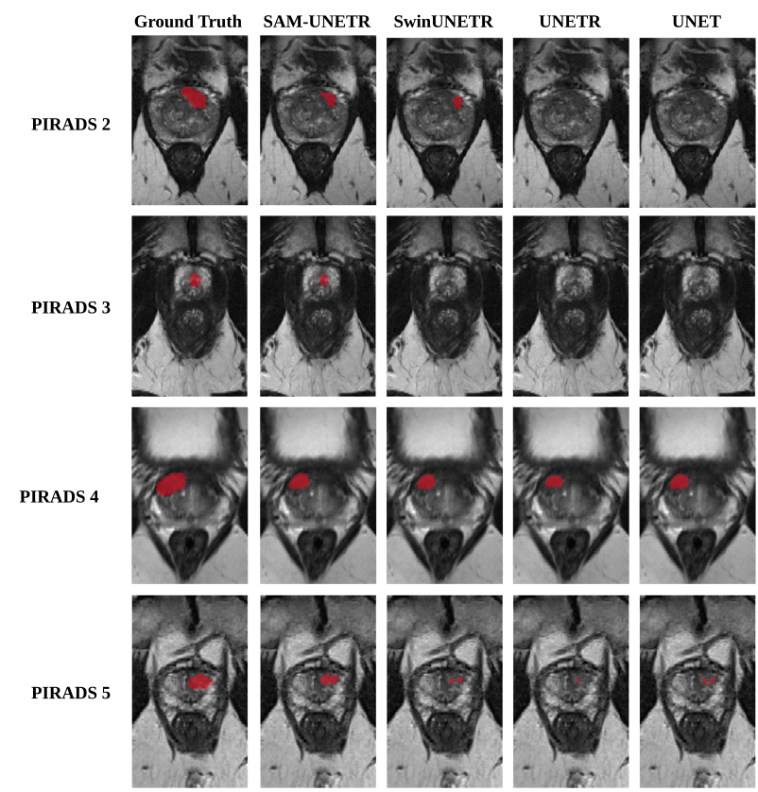
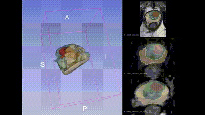
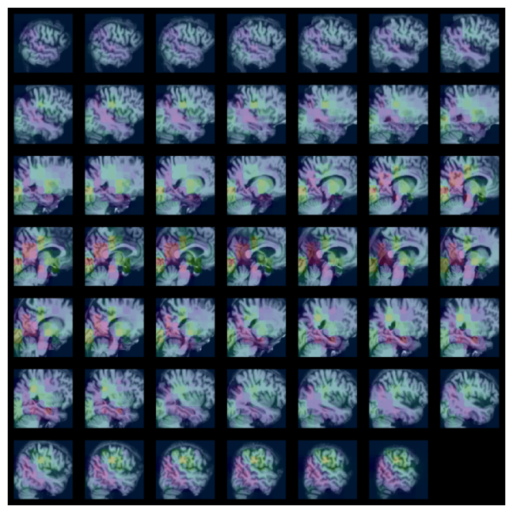
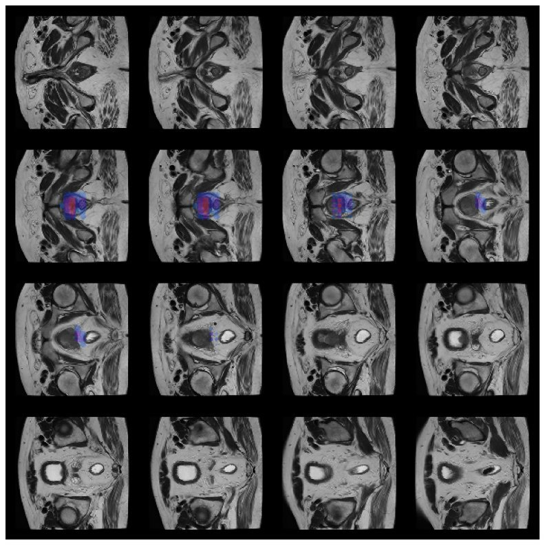
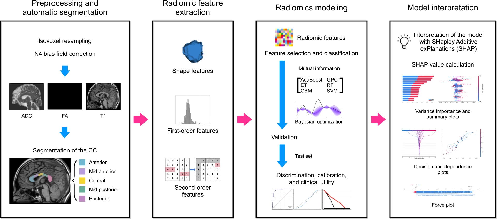
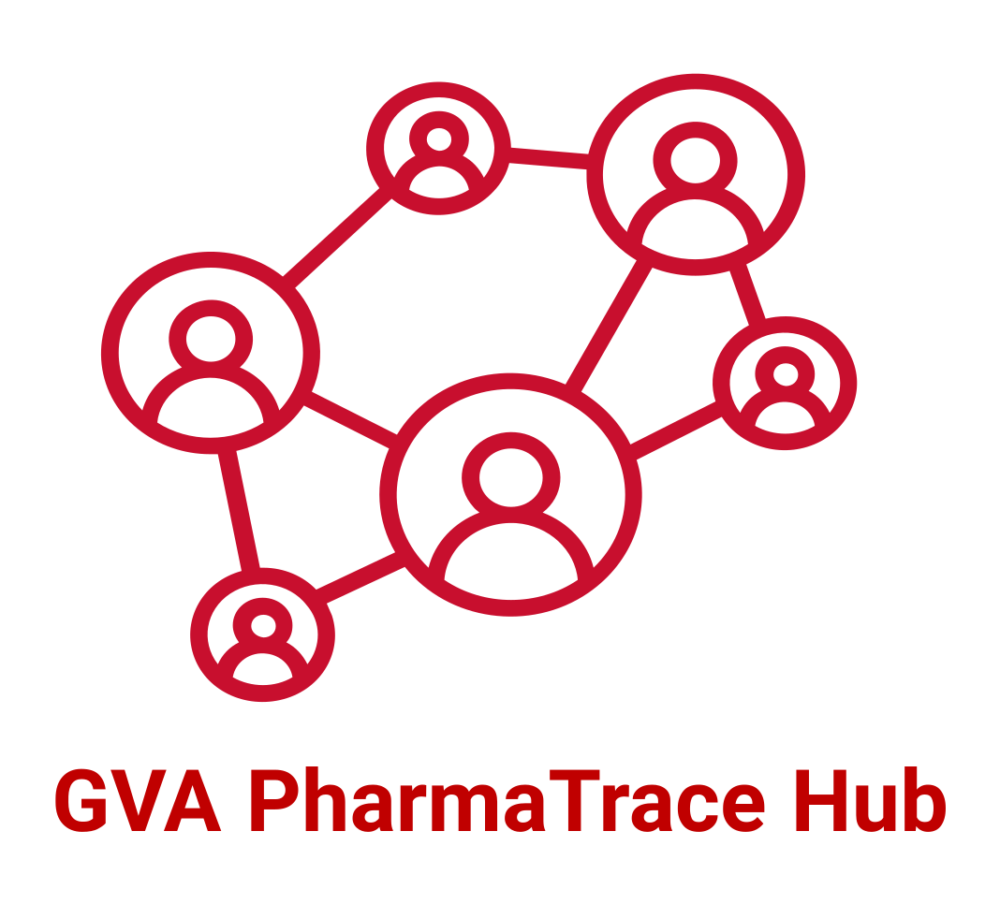

ANÁLISIS CON IA
Análisis de datos con inteligencia artificial
Segmentación, clasificación, generación de informes, radiómica, aprendizaje federado y casos clínicos reales: así aplicamos la inteligencia artificial a la imagen médica.
ANÁLISIS CON IA
Segmentación, clasificación, generación de informes, radiómica, aprendizaje federado y casos clínicos reales: así aplicamos la inteligencia artificial a la imagen médica.
01 · SEGMENTACIÓN DE IMAGEN MÉDICA

Segmentación 3D de múltiples estructuras (columna, pelvis, riñones, bazo, hígado) a partir de TC, con revisión conjunta del render volumétrico y los cortes axial, coronal y sagital.

Delimitación automática de vértebras, discos intervertebrales, canal medular y tejidos blandos adyacentes sobre MRI sagital lumbar.

Comparativa 2D (PI-RADS)

Reconstrucción 3D
Comparativa de modelos de segmentación sobre MRI multiparamétrica (PI-RADS 2 a 5) y reconstrucción volumétrica 3D de las zonas prostáticas a partir de la segmentación por cortes.
02 · CLASIFICACIÓN E INTERPRETABILIDAD DE MODELOS
Clasificación de hallazgos radiológicos (cardiomegalia, atelectasia, consolidación, nódulo, derrame pleural…) sobre radiografía de tórax, con probabilidad por hallazgo.

Clasificación de MRI cerebral en Early Mild Cognitive Impairment, Mild Cognitive Impairment y Alzheimer's Disease.

Clasificación combinando secuencias T2w, ADC map y DWI, con guided backpropagation para explicabilidad del modelo.
03 · RADIÓMICA
Extracción de una gran cantidad de características de las imágenes médicas mediante algoritmos de caracterización de datos, para alimentar modelos predictivos.


Pipeline completo: adquisición y segmentación de la columna lumbar → extracción y selección de características radiómicas → análisis de resultados con curvas ROC.
Cohorte de 187 sujetos control y 134 con primeras alucinaciones (sin diagnóstico de esquizofrenia). Segmentación cerebral con FreeSurfer (Aparc+ASeg), extracción de características con Pyradiomics, y clasificación con SVM, Regresión Logística y Random Forest — AUC hasta 0,939.
Curvas ROC (recreación ilustrativa del AUC publicado)
Importancia de variables (SHAP, ilustrativo)

04 · APRENDIZAJE FEDERADO
Enfoque descentralizado para entrenar modelos de aprendizaje automático: los datos permanecen en los dispositivos/nodos locales y solo se comparten las actualizaciones del modelo, garantizando privacidad y seguridad.
Red federada para acelerar la aplicación de la IA en el Sistema Sanitario Español. Reconocimiento de entidades en informes (NER) aplicado a la extracción de hallazgos PI-RADS/BI-RADS desde informes de radiología en varios hospitales de la Comunitat Valenciana.

Infraestructura que integra y gestiona datos de salud de múltiples fuentes (Fundación Hospital Provincial de Castellón, ISABIAL, IIS La Fe, OmicSpace…) coordinada por la Generalitat Valenciana.
Visualizamos estos modelos y datos en 3D, en web y con dispositivos de realidad aumentada.